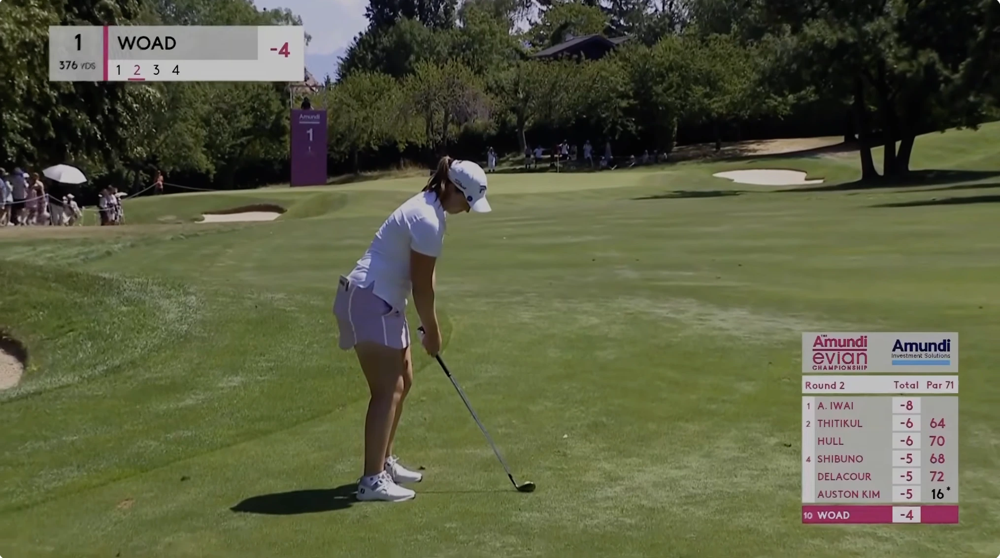

Quick Summary: Japan's Aki Iwai fired a clinical bogey-free opening round of 8-under par and built a two-shot lead at the 2026 Amundi Evian Championship after Round 2. Meanwhile, world No. 1 Nelly Korda faces an intense, high-stakes battle just to survive the weekend, sitting dead level on the cut line at even par as she chases a career Grand Slam and LPGA Hall of Fame validation.

Nelly Korda’s Grand Slam Bid on the Brink
The scripts in professional golf are written with grandeur, but they are executed in the dirt. Nelly Korda arrived at the 2026 Amundi Evian Championship at the Evian Resort Golf Club chasing history. A victory in France would secure the final piece of her career Grand Slam and automatically stamp her ticket into the LPGA Hall of Fame. Not since Juli Inkster accomplished the feat in 1999 has an American female golfer occupied such a rarefied air. Throughout the week, the anticipation was palpable.
Then Friday afternoon arrived, and the narrative collapsed into a grind. Korda struggled to find any momentum on Thursday, grinding out a disappointing 3-over-par 74 as her putter turned ice cold. Friday offered little reprieve. A costly missed par putt on the 17th hole left her hovering right at the cut mark. Chipping and scrambling through her final holes, she finished her 36 holes at dead-level even par. Having finished no worse than tied for eighth in any stroke-play event this season, the world No. 1 spent her evening sweat-watching the cut line rather than planning a weekend charge. The Evian Resort layout has historically vexed Korda, yielding just two top-10 finishes in eight prior visits, and her short-game struggles have once again exposed a rare weakness in her otherwise dominant armor.
Aki Iwai’s Clinical Execution at the Top
While Korda fought to survive, Aki Iwai put on a masterclass in clinical course management. The Japanese star opened her tournament with a flawless, bogey-free 8-under-par round, needing only 27 putts to dismantle Evian’s complex greens. Her ball-striking was equally spectacular; on Friday, she nearly carded a hole-in-one on the downhill par-3 second hole, landing her tee shot inches from the cup.
Iwai’s calm demeanor and precise trajectory control have insulated her from the volatility that has troubled the rest of the field. Leading by two strokes, she has played a brand of mistake-free golf that is typically required to navigate the high-stress environment of major championships. While Iwai commands the top of the leaderboard, her performance is forcing the rest of the field to take aggressive risks to keep pace.
"Majors are won by minimizing the damage, not just chasing birdies. Aki is playing a clean game, while the rest of the field is fighting the slopes."
The Chasing Pack: Home Crowds and Ice Cream Superstitions
Directly behind Iwai, a compelling mix of local hope and major pedigree is taking shape on the leaderboard. France's Perrine Delacour gave the home gallery plenty to cheer about, carding a brilliant round to sit alone at 6 under par—a stellar showing for a player ranked 116th in the world. Just behind Delacour sits a lethal chasing group at 5 under, spearheaded by England's Charley Hull and South Korea's Haeran Ryu. Ryu, fresh off her major breakthrough at the KPMG Women's PGA Championship less than two weeks ago, has maintained her red-hot form, highlighted by a dramatic eagle holed from off the green on the par-5 15th.
Charley Hull, in classic fashion, offered a lighter explanation for her stellar play, attributing her low scoring in the second round to an ice cream bar her caddie purchased for her at the turn. The chasing pack also features Lottie Woad at 5 under. Woad, who finished runner-up by a single stroke last year while playing as an amateur, is back in the mix, playing with the poise of someone determined to erase the sting of a near-miss.
Chasing Down the Leader over the Weekend
With only a two-shot cushion, Iwai is well within reach of the chasing pack. Evian Resort Golf Club is notorious for yielding low scores when the wind dies down, and the weekend forecast suggests ideal conditions for aggressive iron play. Former champion Brooke Henderson is lurking at 4 under par after a stellar opening 67. The Canadian won this major in 2022 and has a history of launching low weekend charges on this track.
If Iwai stumbles, Ryu, Hull, and Henderson possess the major experience to take advantage immediately. However, if Iwai continues to execute her game plan with the same bogey-free precision she displayed over the first two days, she will be difficult to catch. The stage is set for a thrilling weekend in France, where the hunt for a major title will collide with Korda's battle to keep her Grand Slam dream alive.
Frequently Asked Questions
Who leads the 2026 Amundi Evian Championship?
Aki Iwai of Japan, at 8 under after Round 2, two clear of France's Perrine Delacour at 6 under.
Is Nelly Korda going to miss the cut?
She sat on the cut line at even par during Round 2, at real risk of missing the weekend after a cold week with the putter.
What is Korda chasing at the Evian?
A win completes the career Grand Slam and earns her an LPGA Hall of Fame place. The last American to do both was Juli Inkster in 1999.
Where is Brooke Henderson after Round 2?
Tied for eighth at 4 under, four back but still alive after her opening 67. She won this event in 2022.
Is Haeran Ryu playing well again?
Yes. The KPMG Women's PGA winner from under two weeks ago sat at 5 under, right in the chasing pack.
When does the Evian Championship finish?
It runs July 9 to 12 at Evian Resort Golf Club in Evian-les-Bains, France, for a $9.1 million purse.